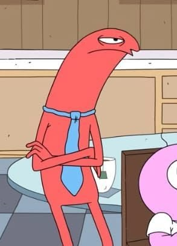

*n = 2 by default*
When you visually see or auditorily hear a stimulus that matches 2 intervals ago, press corresponding button
For example, if you see a circle, in the same position as it was 2 intervals ago - press the position button